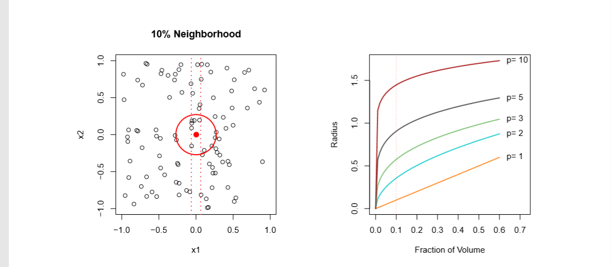

Statistical learning
The regression function f(x)
- Is also defined for vector \(X\) ; e.g.
- Is the ideal or optimal predictor of \(Y\) with regard to mean-squared prediction error: \(f(x) = E(Y|X = x)\) is the function that minimizes \(E\{Y-g(X))^2|X=x\}\) over all functions \(g\) at all points \(X = x\).
- \(\epsilon=Y-f(x)\) is the irreducible error — i.e. even if we knew \(f(x)\), we would still make errors in prediction, since at each \(X = x\) there is typically a distribution of possible \($Y\) values.
- For any estimate \(\hat{f}(x)\) of \(f(x)\), we have our errors: \(E[(Y-\hat{f}(X))^2|X=x]=[f(x)-\hat{f}(x)]^2+Var(\epsilon)\)
How to estimate f
Typically we have few if any data points with \(X = 4\) exactly. So we cannot compute \(E(Y|X = x)!\) Relax the definition and let \(\hat{f}(x)=Ave(Y|X\epsilon N(x))\) where \(N(x)\) is some neighborhood of \(x\).

- Nearest neighbor averaging can be pretty good for small \(p\) (number of features X) — i.e. \(p ≤ 4\).
- We will discuss some techniques, such as kernel and spline smoothing later in the course.
- Nearest neighbor methods can be not effective when p is large. Reason: the curse of dimensionality. Nearest neighbors tend to be far away in high dimensions. – We need to get a reasonable fraction of the \(N\) values of \(y_i\) to average to bring the variance down—e.g. 10%. – A 10% neighborhood in high dimensions need no longer be local, so we lose the spirit of estimating \(E(Y|X = x)\) by local averaging.
Curse of Dimensionality

Sample Code: curse of dimension
- Higher dimensions -> more troubles
- https://github.com/ruiwu1990/CSCI_4120/tree/master/curse_of_demensionality
| Index | Prev |